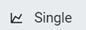
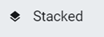
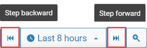
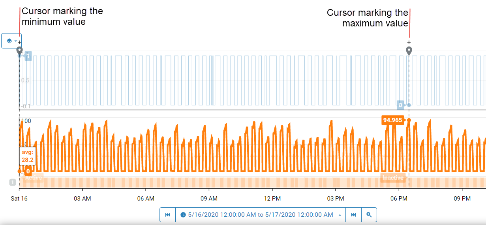
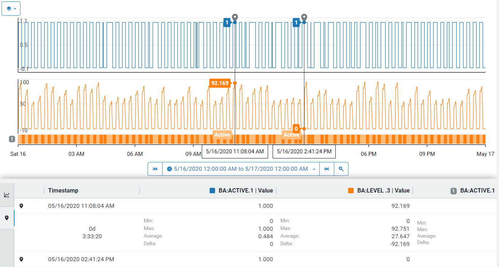

Getting Started with Trend Data
Use trace data in a trend to monitor assets, anticipate problems, and proactively perform preventative maintenance.
The following procedure describes how to display traces in your trend and glean useful information from your data.
Procedure
Log in to OSIsoft Cloud Services.
Click the navigation icon
 (upper left corner) and click Trend (under Visualization).
(upper left corner) and click Trend (under Visualization). In the Add Traces blade, click the + sign to add the trace to the trend.
Tip:
Specify the stream name or description in the Search box to find the OCS streams you are interested in.
After you have finished adding the traces, click the x in the Add Traces blade to hide the blade and maximize the available area to display your trend.

Click the icon to choose one of the three views:
Trend View Description  Each trace is displayed in its own trend. All measurements are plotted on the same scale.  All measurements are plotted on its own scale. The following screen capture shows the stacked view.

Click the time picker and select the time range you want to view. If the desired time range doesn't appear in this list, click the Custom Range tab and specify your time range.
Click Step backward or Step forward to move the time range of the data displayed in the trend.
The trace will move in time increments displayed in the time range picker. If the trend displays the last 8 hours, Step backward shows the previous 8-hour period. If it displays the last 30 days, Step forward shows the next 30-day period. Click the triangle to select another time range or specify a custom range.

The Legend table displays the Trace view. It shows the legend for each trace, the last value, minimum, maximum, and average values in the displayed time range.

Click on a trace to select it for further analysis.
The selected trace is highlighted, and two cursors automatically mark the minimum and maximum values for the displayed time range. These cursors, called easy cursors, remain as long as the trace is highlighted.
Click the plus sign (+) above the trace to lock the cursors in place.
The + turns into an x. To unlock the cursor, click the x.
Note: When two cursors are locked, the Legend table displays summary calculations for the values between the two cursors, known as the Cursor view.
Click the link icon
 in the menu bar to copy the URL of the workspace.
in the menu bar to copy the URL of the workspace. This link, when shared with colleagues, gives them the same view of the trend that they can then use to troubleshoot problems.